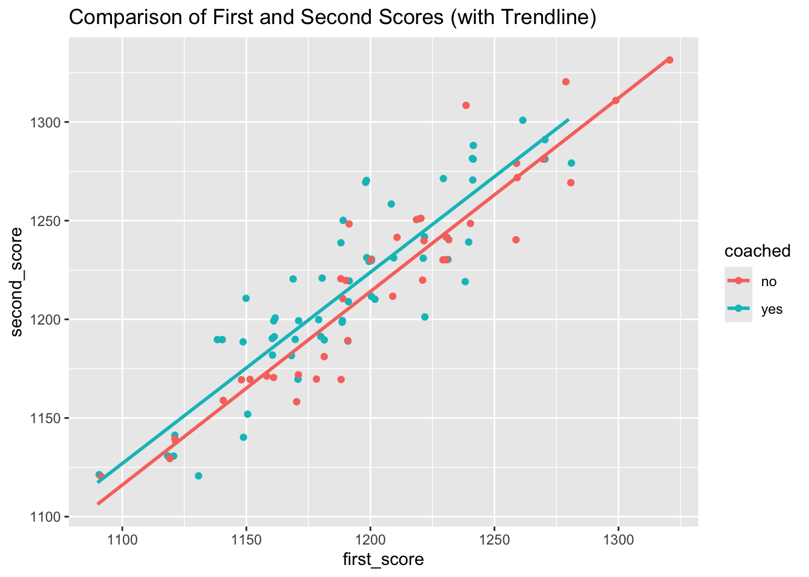

ggplot(SAT, aes(x = first_score, y= second_score, color = coached)) +
geom_jitter(height = 2, width = 2) +
geom_smooth(method = "lm", se = F) +
labs(title = "Comparison of First and Second Scores (with Trendline)")
Math 141, Week 3
Your name here
In this homework assignment you will practice: - Applying probability rules and concepts - Distinguishing between experiments and observational studies - Assessing how study design and sampling strategies influence results and interpretation
I collaborated with…
Remember that you are not allowed to use any generative AI models (like ChatGPT) on your assignment
Suppose A and B are events with P(A) = 0.3 and P(B) = 0.7.
a. Is it always possible to compute P(A and B) if you only know P(A) and P(B)? Explain why or why not.
b. Assuming that events A and B arise from independent random processes, find P(A and B) and P(A | B).
c. Suppose we are given that P(A and B) = 0.1. Are events A and B independent? Explain.
d. If we are given that P(A and B) = 0.1, what is P(A | B)?
Lupus is a medical phenomenon where antibodies that are supposed to attack foreign cells to prevent infections instead see plasma proteins as foreign bodies, leading to a high risk of blood clotting. It is believed that 2% of the population suffer from this disease. The test is 98% accurate if a person actually has the disease. The test is 74% accurate if a person does not have the disease. There is a line from the Fox television show House that is often used after a patient tests positive for Lupus: “It’s never Lupus.” Do you think there is truth to this statement? Use appropriate probabilities to support your answer.
a. During World War II, the statistician Abraham Wald was asked to help the US military determine where to place more armor on bomber planes. Adding armor protects planes, but weighs a lot, so it must be used sparingly. Statistical data on aircraft damage showed that for the planes observed, the highest density of bullet holes and damage was near the fuselage, while the lowest density was near the motors. It’s said that the military concluded that bullets tended to hit the fuselage most often, and planned to add more armor to the fuselage before consulting Wald. Why would this have been a mistake? What would you recommend instead if you were in Wald’s place?
b. A survey is conducted on a simple random sample of 1,000 women who recently gave birth, asking them about whether or not they had health insurance. A follow-up survey about medical debt is conducted 2 years later, however, only 567 of these women are reached at the same address. The researcher reports that these 567 women are representative of all mothers. What is the flaw in the researcher’s reasoning? What should they have done different in conducting the study if they wanted to draw such strong conclusions?
c. A conservation non-profit enrolls volunteer landowners in a program where landowners will receive financial compensation if they do not cut down any trees on their property over 5 years. The program participants comply and receive payment, and the program administrators conclude that the program prevented carbon emissions by preventing deforestation. Why might these causal claims be misleading? What should they have done different in conducting the study if they wanted to draw such strong conclusions?
d. (From IMS Ch. 2) Suppose we want to estimate average household size, where a “household” is defined as people living together in the same dwelling, and sharing living accommodations. If we select students at random at an elementary school and ask them what their family size is, will this be a good measure of household size? Or will our average be biased? If so, will it overestimate or underestimate the true value?
Recall the conservation non-profit program described in Exercise 3 (c). Consider the following approaches that researchers may take to evaluate the effectiveness of this type of avoided deforestation program:
Researchers compare outcomes from a large sample of those who already enrolled in the program to a large sample of those who did not. Both samples are representative with respect to geographic region, forest biomes, relative income of the landowner, and ownership type (public vs private land).
Researchers apply for a grant to implement their own similar program with a smaller sample, in a specific region of Brazil. They invite applicants to the program, and enroll a random sample of the applicants in the program. Researchers then compare outcomes between those enrolled in the program, and the applicants who were not randomly selected to enroll.
Compare these approaches by answering the following questions.
a. Indicate whether each approach is a randomized experiment or an observational study.
b. Suppose our overarching research question is: do payment-based conservation programs prevent deforestation? To what extent does each approach help us answer this question?
c. As approaches to generating knowledge, what are the benefits of each, and what are the potential drawbacks? Take statistical considerations into account, but also think about the other demands and ethics of this type of research.
d. If you had the results of each study in front of you, which would you trust more? Explain why.
In a study of the relationship between socio-economic class and unethical behavior, 129 University of California undergraduates at Berkeley were asked to identify themselves as having low or high social-class by comparing themselves to others with the most (least) money, most (least) education, and most (least) respected jobs. They were also presented with a jar of individually-wrapped candies and informed that they were for children in a nearby laboratory, but that they could take some if they wanted. Participants completed unrelated tasks and then reported the number of candies they had taken. It was found that those in the upper-class level took more candy than did those in the lower-class level.
a. Identify the population of interest.
b. Identify the variables measured in the study and specify their types.
c. Identify the sample in the study.
d. Identify the research question.
e. Comment on whether the results of the study can be generalized to the population and if the findings of the study can be used to establish causal relationships.
Researchers are interested in determining whether coaching for college admissions exams has an effect on exam scores. The researches contact 100 high school junior students who have registered for the SAT exam, offering to provide 20 hours of free SAT coaching by knowledgeable tutors. Students are required to take one SAT practice exam before receiving coaching, and one practice exam after coaching concludes. 60 of the 100 students agree to be coached and complete the 20 hours of coaching. The remaining 40 students did not complete coaching, but still reported scores for a first and second practice test. Data on the scores for these students is stored in the SAT dataframe and can be loaded by running the following code chunk. (For this problem, it’s not necessary to understand what each line of code below is doing)
a. Does this investigation represent a random experiment or an observational study? Explain.
b. Explain why the researchers are interested in measuring the difference in first and second exam scores for both coached and non-coached students.
c. The scatterplot below compares each student’s first and second scores (color distinguishes coached and non-coached students). Describe any trends you observed in the plot.

d. Explain why we would expect to see a relationship between pre- and post-coaching scores, regardless of the effect of coaching.
e. If coaching had no effect on average for SAT scores, what trends would we expect to observe in the scatterplot? Explain.
f. Based on the information given in the statement of this exercise, do you think it would be reasonable to generalize any conclusions for this investigation to the population of all high school juniors who plan to take the SAT? Why or why not?